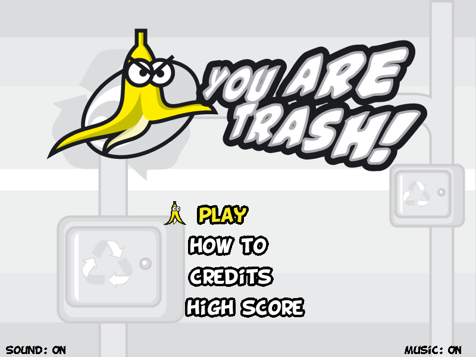
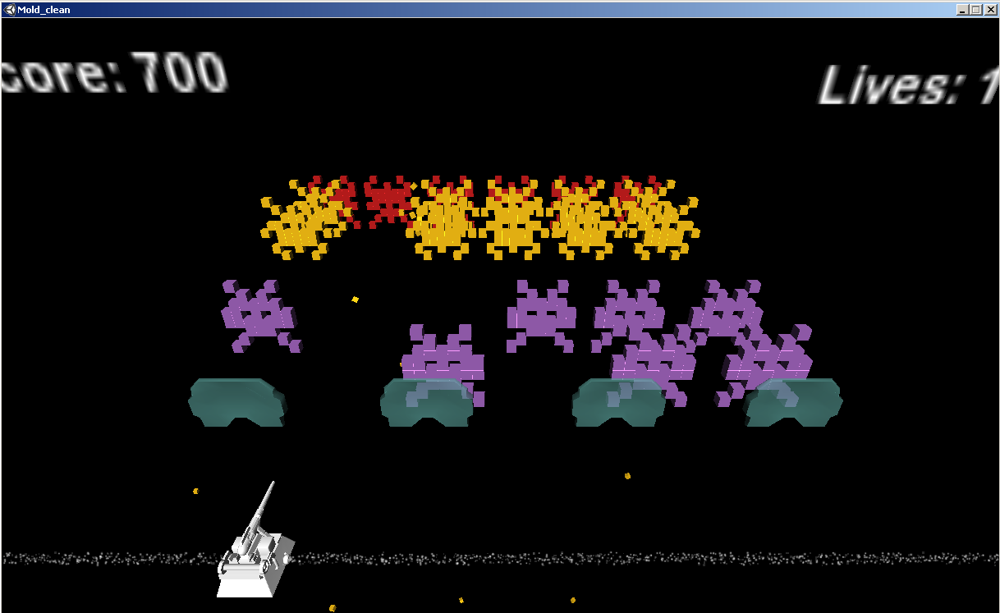

Bruno Baère
Software Engineer and researcher specializing in C++, computer graphics, game development, and artificial intelligence with dynamic difficulty adaptivity. Master's in Computer Science from PUC-Rio.
Certifications
Resumé
Download the complete and updated version of my curriculum vitae:
Academic & Research Profiles
Publications
Conferences & Presentations
Games Developed




Seu Espião Safado
2011A print-and-play social deduction game of deceit and cold war espionage. Presented at Gamecraft 2011 (Rio de Janeiro, Brazil). Available in Portuguese (PT-BR).
RPG-related Publications
Encontros Aleatórios: O Bando da Pena Vermelha
Description of a Robin Hood-esque band of mercenaries, with a twist, designed for the Old Dragon RPG system.
Encontros Aleatórios: A Estalagem Lebre Confortável
An encounter setpiece in an inn with hollow walls used to spy on patrons. Features OSR-based mechanics and Old Dragon rules.
Ser Mago pra Quê?
Guide on playing low-level wizards and magic-users in OSR TTRPGs and Old Dragon, fostering narrative flexibility and communication with the DM.
Zen e a Arte de Armadilhas
Based on the OSR Manifesto, discussing how Dungeon Masters and thief players handle trap searching/disarming with player-challenging mechanics.
Delírios de X'agyg: Episódio 1 - A Balada de Baleem Altrafer
A sandbox adventure module for a low-level party in Old Dragon dealing with the lich X'agyg, involving a roadside inn, swamp, and fortune-telling sorceress.